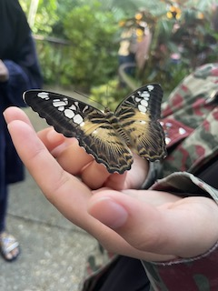
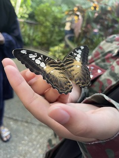

When I'm traveling, visiting new places, or just generally surrounded by vibrant landscapes and breathtaking views, I like clicking a few pictures to capture the moment.
As you can see below, I've listed the different types of photography that I enjoy!
This involves daylight photography of natural features of land, sky, water, etc. It may also involve subjects at a distance or nearby.
The first picture below is from the time I was kayaking in Michigan, and the second one was from the train station.
The last two are from the Butterfly Rainforest at the Florida Museum of Natural History.


 

Golden hour photos are usually took during the last hour before sunset or the first hour after sunrise. They provide the perfect light to capture stunning photos!
Here are a few "golden-hour" pictures that I took this year


I'm not a photographer but I do enjoy photography, so here are some beach pictures 8 minutes away from my house:)